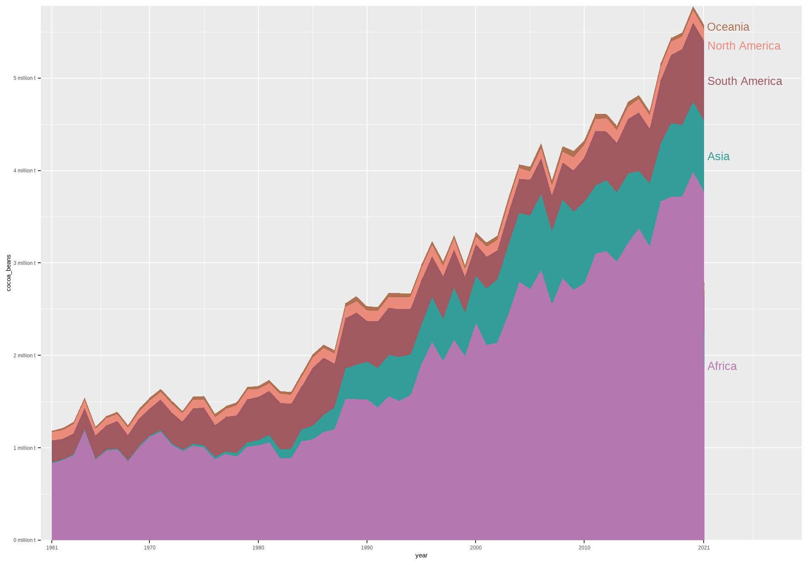
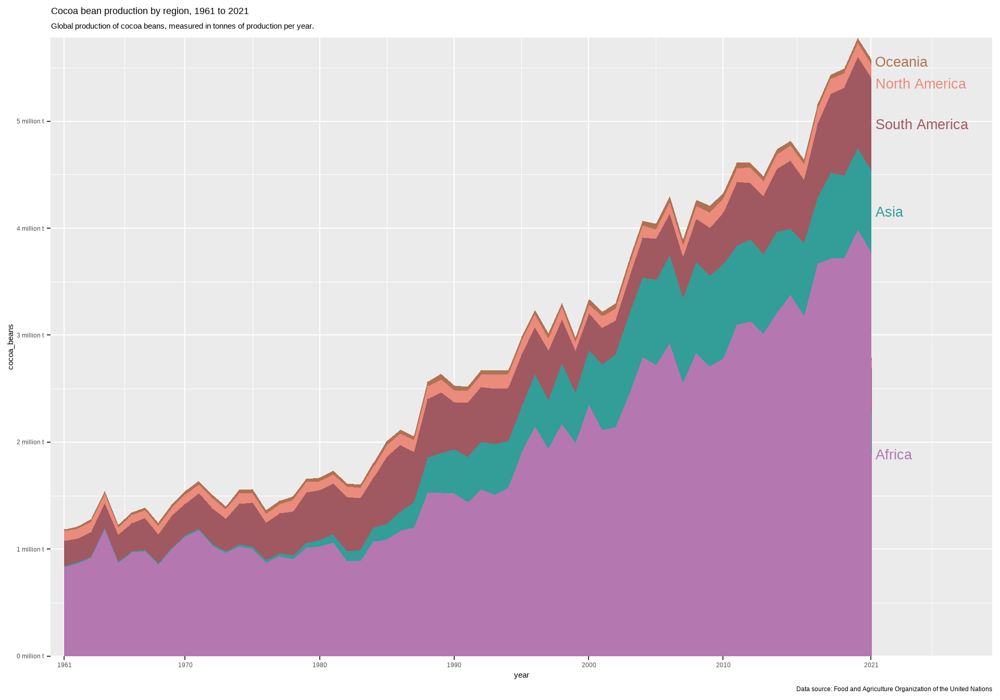
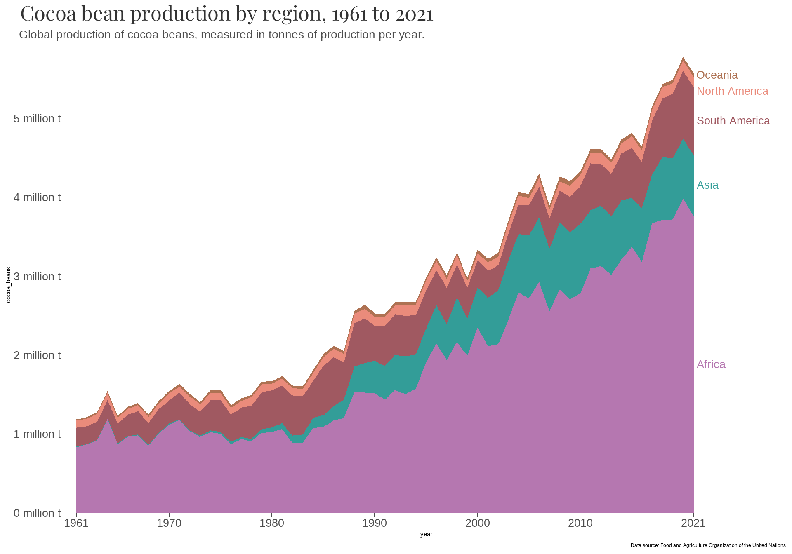
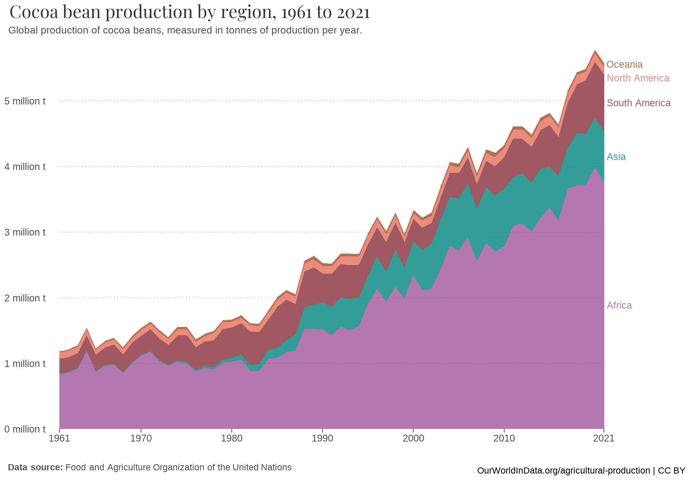

# load packages
library(ggtext)
library(showtext)
library(here)
library(tidyverse)
# load custom fonts
font_add_google("Playfair Display", regular.wt = 400)
showtext_auto()Area chart
The chart we are set to recreate, originally obtained from Our World in Data, stands as a prime example of an area chart.
ORIGINAL CHART: Cocoa Bean Production by Region, 1961 to 2021
An area chart, also known as a stacked area chart, is a type of data visualization that displays quantitative data over a continuous interval or time period. It is similar to a line chart but with the area below the lines filled in, usually with colors representing different categories or groups within the data.
STORY: Cocoa bean production by region
The cocoa bean, also referred to as cocoa, is the dried and fully fermented fatty seed of Theobroma cacao, from which cocoa solids and cocoa oil are extracted. The “beans” are the essential ingredient for chocolate and cacao products. Products received from cocoa beans are not only used in chocolates, but also in a wide range of food products.
GEOMETRIES
: STEP-BY-STEP CHART RECREATION
STEP 0: Packages and data preparation
First, we load the necessary packages and fonts.
Then we import the dat_cocoa in R.
library(readxl)
dat_cocoa <- read_excel(here("data", "dat_cocoa.xlsx"))
str(dat_cocoa)tibble [305 × 3] (S3: tbl_df/tbl/data.frame)
$ region : chr [1:305] "Africa" "Africa" "Africa" "Africa" ...
$ year : num [1:305] 1961 1962 1963 1964 1965 ...
$ cocoa_beans: num [1:305] 835368 867170 922621 1190061 874245 ...We also create a color set:
# Custom color palette
my_colors <- c("#AE7253", "#EA8B7B","#A05961","#339D98","#B577B0")final_dat <- dat_cocoa |>
filter(year=="2021") |> # Keep only 2021 value
arrange(desc(region)) |> # Inverse factor order (first is at the bottom of plot)
mutate( # Create new column ypos and
ypos=cumsum(cocoa_beans) - 0.5 * cocoa_beans # fill with cumulative sum of invest for 2017
)
final_dat$ypos[4] <- 5350000df <- data.frame(
y = seq(10^6, 5*10^6, by = 10^6),
xmin = rep(1961, 5),
xmax = rep(2021, 5)
)STEP 1: Create a basic area chart

The aes function is used to map the variables to the aesthetics of the plot, and geom_area is used to create the area plot.
STEP 2: Set new colors to the areas
ggplot(dat_cocoa, aes(x = year, y = cocoa_beans, fill = region)) +
geom_area() +
scale_fill_manual(values = my_colors)STEP 3: Remove the legend and display the continent’s name next to the corresponding area
ggplot(dat_cocoa, aes(x = year, y = cocoa_beans, fill = region)) +
geom_area() +
geom_text(data = final_dat, aes(max(dat_cocoa$year) + 0.3, y = ypos, label = region, color = region),
size = 7, hjust = 0) +
scale_fill_manual(values = my_colors) +
scale_color_manual(values = my_colors) +
theme(legend.position = "none")STEP 4: Change the labels of the axes and add extra space on the x-axis
ggplot(dat_cocoa, aes(x = year, y = cocoa_beans, fill = region)) +
geom_area() +
geom_text(data = final_dat, aes(max(dat_cocoa$year) + 0.3, y = ypos, label = region, color = region),
size = 7, hjust = 0) +
scale_fill_manual(values = my_colors) +
scale_color_manual(values = my_colors) +
scale_x_continuous(breaks = c(1961, 1970, 1980, 1990, 2000, 2010, 2021),
labels = c(1961, 1970, 1980, 1990, 2000, 2010, 2021)) +
scale_y_continuous(labels = scales::comma_format(scale = 1e-6, suffix = " million t")) +
coord_cartesian(xlim = c(1960, 2030), expand = FALSE) +
theme(legend.position = "none")
STEP 5: Add title, subtitle, and caption
ggplot(dat_cocoa, aes(x = year, y = cocoa_beans, fill = region)) +
geom_area() +
geom_text(data = final_dat, aes(max(dat_cocoa$year) + 0.3, y = ypos, label = region, color = region),
size = 7, hjust = 0) +
scale_fill_manual(values = my_colors) +
scale_color_manual(values = my_colors) +
scale_x_continuous(breaks = c(1961, 1970, 1980, 1990, 2000, 2010, 2021),
labels = c(1961, 1970, 1980, 1990, 2000, 2010, 2021)) +
scale_y_continuous(labels = scales::comma_format(scale = 1e-6, suffix = " million t")) +
coord_cartesian(xlim = c(1960, 2030), expand = FALSE) +
labs(title = "Cocoa bean production by region, 1961 to 2021",
subtitle = "Global production of cocoa beans, measured in tonnes of production per year.",
caption = "Data source: Food and Agriculture Organization of the United Nations") +
theme(legend.position = "none")
STEP 6: Fine-tune the chart’s theme
ggplot(dat_cocoa, aes(x = year, y = cocoa_beans, fill = region)) +
geom_area() +
geom_text(data = final_dat, aes(max(dat_cocoa$year) + 0.3, y = ypos, label = region, color = region),
size = 7, hjust = 0) +
scale_fill_manual(values = my_colors) +
scale_color_manual(values = my_colors) +
scale_x_continuous(breaks = c(1961, 1970, 1980, 1990, 2000, 2010, 2021),
labels = c(1961, 1970, 1980, 1990, 2000, 2010, 2021)) +
scale_y_continuous(labels = scales::comma_format(scale = 1e-6, suffix = " million t")) +
coord_cartesian(xlim = c(1960, 2030), expand = FALSE) +
labs(title = "Cocoa bean production by region, 1961 to 2021",
subtitle = "Global production of cocoa beans, measured in tonnes of production per year.",
caption = "Data source: Food and Agriculture Organization of the United Nations") +
theme(panel.background = element_blank(),
panel.grid = element_blank(),
axis.text = element_text(color = "grey30", size = 20, margin = margin(t = 4)),
axis.ticks.y = element_blank(),
axis.ticks.length.x = unit(0.05,"inch"),
axis.ticks.x = element_line(color = "grey30"),
plot.title = element_text(family = "Playfair Display",
color = "grey20", size = 37, hjust = -0.15),
plot.subtitle = element_text(margin = margin(b = 15),
color = "grey30", size = 21, hjust = -0.15),
legend.position = "none")
STEP 7: Add a second caption and horizontal dotted grid lines
ggplot(dat_cocoa, aes(x = year, y = cocoa_beans, fill = region)) +
geom_area() +
geom_text(data = final_dat, aes(max(dat_cocoa$year) + 0.3, y = ypos, label = region, color = region),
size = 7, hjust = 0) +
geom_linerange(data = df, aes(y = y, xmin = xmin, xmax = xmax),
color = "grey35", linetype = "dotted", inherit.aes = F, alpha = 0.50) +
scale_fill_manual(values = my_colors) +
scale_color_manual(values = my_colors) +
scale_x_continuous(breaks = c(1961, 1970, 1980, 1990, 2000, 2010, 2021),
labels = c(1961, 1970, 1980, 1990, 2000, 2010, 2021)) +
scale_y_continuous(labels = scales::comma_format(scale = 1e-6, suffix = " million t")) +
coord_cartesian(xlim = c(1960, 2030), expand = FALSE) +
labs(title = "Cocoa bean production by region, 1961 to 2021",
subtitle = "Global production of cocoa beans, measured in tonnes of production per year.",
caption = "**Data source:** Food and Agriculture Organization of the United Nations",
x = "OurWorldInData.org/agricultural-production | CC BY") +
theme(panel.background = element_blank(),
panel.grid = element_blank(),
axis.title.x = element_text(size = 19, hjust = 1, margin = margin(t = 25)),
axis.title.y = element_blank(),
axis.text = element_text(color = "grey30", size = 20, margin = margin(t = 4)),
axis.ticks.y = element_blank(),
axis.ticks.length.x = unit(0.05,"inch"),
axis.ticks.x = element_line(color = "grey30"),
plot.title = element_text(family = "Playfair Display",
color = "grey20", size = 37, hjust = -0.15),
plot.subtitle = element_text(margin = margin(b = 15),
color = "grey30", size = 21, hjust = -0.15),
plot.caption = element_markdown(color = "grey30", size = 19,
hjust= -0.12, margin = margin(t = -12)),
legend.position = "none")
Storytelling with the chart
This visualization offers a thorough and comprehensive insight into the evolving trends of cocoa bean production across various regions spanning the last six decades. Through the use of the area chart, the visualization effectively captures the fluctuations and distribution of cocoa production over time, allowing viewers to discern patterns and variations in different geographical areas. Specifically, from 1960 to 2021, world production rose, reaching more than 5.5 million tonnes. Cocoa production varies significantly by continent, with Africa leading global production. Asia has also played a significant role in cocoa production since 1980, while South America contributes substantially to the global cocoa market as well, known for its high-quality beans.